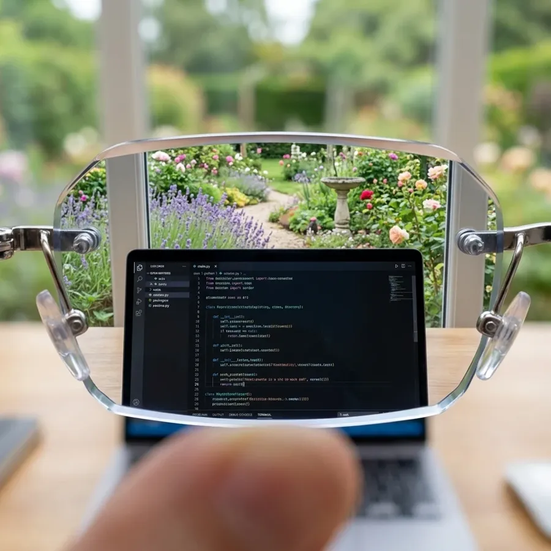

BlueLume Glasses: one pair for near, far, screens and sun
Stop switching between reading glasses, distance glasses and sunglasses. BlueLume does all of it in one light frame.

Get BlueLume, up to 55% off
- Near to far in one lens: read, use your phone and see across the room without taking them off
- Screens: blue-light filtering lenses for computer and phone time
- Sun: transition lenses that darken outdoors
- Light: under 1 oz, so you forget you're wearing them
Black Friday at the official shop: up to 55% off (50% on one pair, 55% when you take 3).
90-day money-back guarantee. Over 217,000 pairs sold.
Quick answers
Who are they for?
Anyone tired of carrying two or three pairs: reading, distance and sunglasses.
What if they don't suit me?
The official shop gives you 90 days to send them back for your money.
Where do I order?
On the official BlueLume shop, through the button on this page. The discount is applied there.
Offer and prices are set by the official BlueLume shop and shown at checkout.